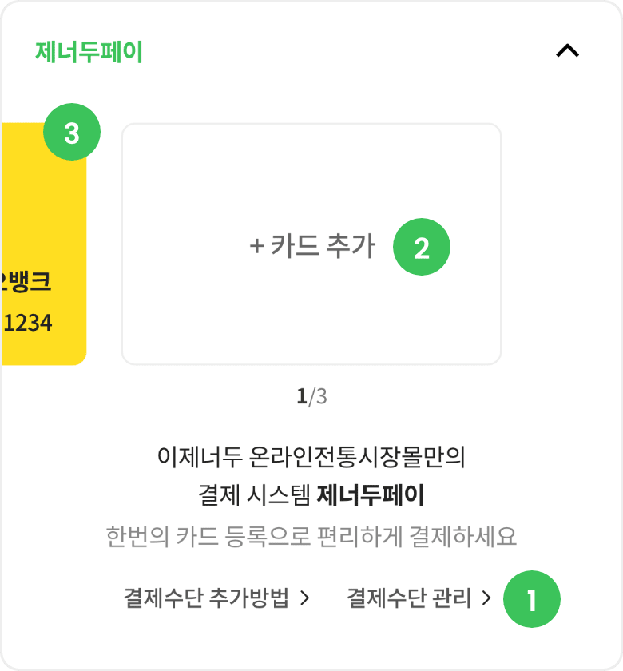
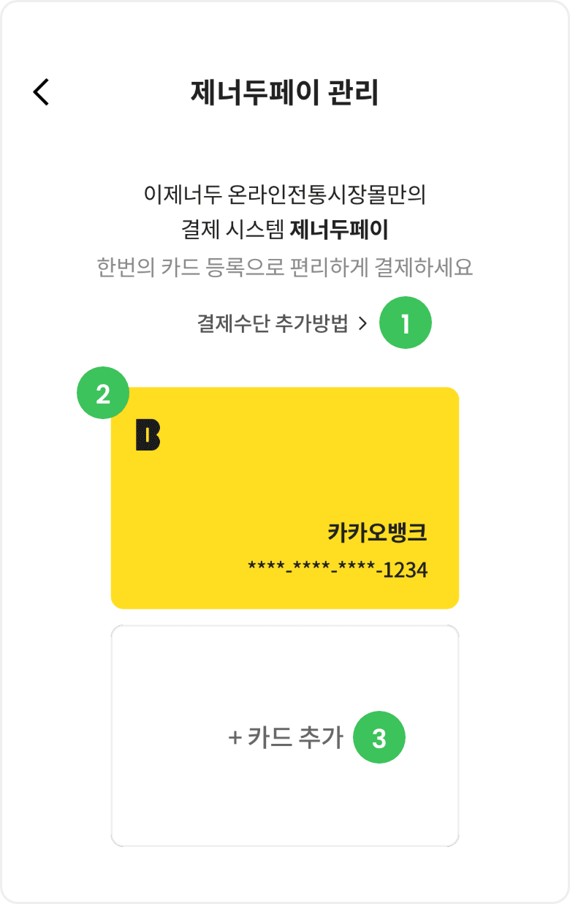

제너두페이란?
이제너두 온누리전통시장몰만의 결제 시스템으로, 한번의 카드등록으로 매 결제시마다 등록된 카드로 결제할 수 있는 사용자 편리 시스템입니다
제너두페이 등록 방법
1. 상품주문결제 시 결제수단 선택 화면에서 카드추가 버튼으로 최초 1회 카드 등록 후 등록된 카드로 간편결제 이용이 가능합니다.

-
카드 설정
제너두페이 간편결제를 위해서는 최초 결제 전용 신규 카드 등록이 필수입니다.
-
카드 추가
제너두페이 간편결제 전용 카드는 여러 개 추가해서 선택적으로 사용 가능합니다.
-
카드 선택
등록된 제너두페이 결제 카드 중에서 상품 구매에 사용하고자하는 카드 선택후 결재를 진행합니다
2. 마이페이지 > 쇼핑관리 > 제너두페이 관리에서 간편결제 카드등록 후 상품 주문 결제 시 등록된 카드로 빠르고 쉽게 이용이 가능합니다.
제너두페이 관리 화면

-
카드 추가방법 안내
제너두페이 사용을 위한 단계별 간편결제 카드 등록 안내.
-
카드 목록
온누리에 등록 된 제너두 페이 결제용 카드 정보 목록.
-
카드 추가
제너두페이 간편결제 전용 카드는 여러 개 추가해서 선택적으로 사용 가능
주의사항
제너두페이는 카드 등록 시 신용카드,은행계좌,휴대폰 명의자와 SMS 인증 받는 휴대폰 명의자가 동일해야 합니다.